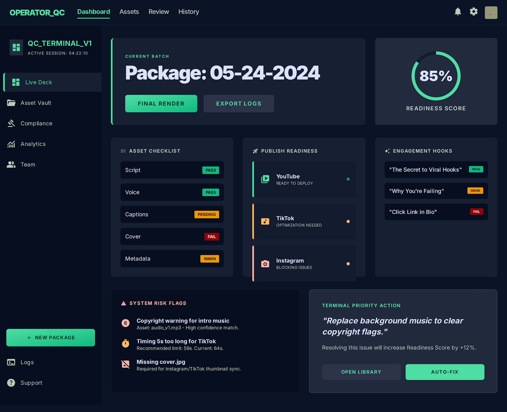

PF SAFE DEMO · 2026-03-23-p001
Shorts Package QC Board
A single-screen QA board that checks whether a short-form content package is actually publish-ready before upload.
ingest status
Imported from Stitch exportYesterday’s Stitch export was normalized into a dependency-light PF-safe viewer while preserving the original code artifact for reference.
- Source captured as local artifact
- Public demo path avoids remote CDN dependencies
- Preview generated from shipped screen image
